🔍 स्थानीय खोज — सभ खोज-प्रविष्टि, नाम, विषय खोजू

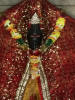

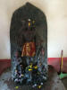

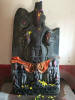

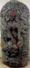

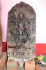

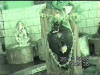

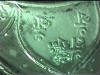

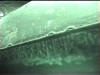

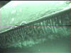

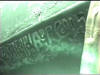

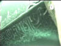

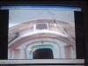

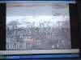

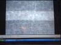

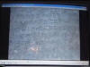

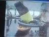

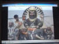

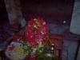

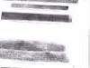

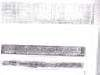

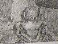

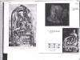

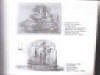

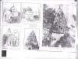

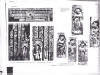

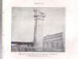

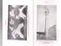

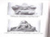

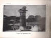

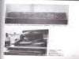

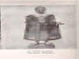

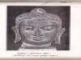

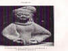

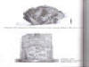

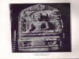

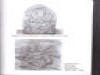

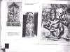

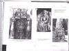

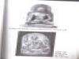

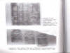

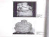

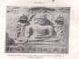

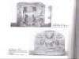

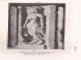

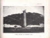

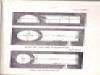

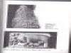

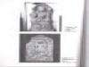

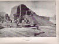

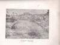


.jpg)

.jpg)
.jpg)


.jpg)


.jpg)
.jpg)


.jpg)


चैनपुर सहरसा- मिथिलाक एकमात्र नीलकंठ मन्दिर, संगमे आदिकालीन भव्य काली-मन्दिर सेहो एहि गाममे अछि। महाशिवरात्रि आ कालीपूजा बड़ धूमधामसँ चैनपुरमे होइत अछि।

त्योथा गढ़ लग। पुरान गढ़। एकर पूबमे ब्रह्मपुराक बाबा हरिहरनाथ महादेव मन्दिर आ दक्षिणमे उच्चैठ भगवती छथि।

त्योथा गढ़ लग। पुरान गढ़। एकर पूबमे ब्रह्मपुराक बाबा हरिहरनाथ महादेव मन्दिर आ दक्षिणमे उच्चैठ भगवती छथि।


मिथिलाक खोज
ई आलेख हमर दशकसँ ऊपरक मिथिलाक यात्राक उपरान्तक सूत्र-वृत्तान्त अछि आ ऐमे ऐ सभ स्थानक स्थानीय निवासी आ गाइड सभक अकथनीय योगदान छन्हि । कखनो कालतँ भाड़ाक गाड़ीक ड्राइवर लोकनि सेहो नीक गाइड सिद्ध भेला।—गजेन्द्र ठाकुर
"मिथिलायदयश्च मध्यंते रिपवो इति मिथिला नगरी" — मिथिला जतऽ शत्रुकेँ मथल जाइत अछि — पाणिनीक विवरण।
किला आ गढ़
बलिराजपुर किला— मधुबनी जिलाक बाबूबरही प्रखण्डसँ ५ किलोमीटर पूब बलिराजपुर गाम अछि। एकर दक्षिण दिशामे एकटा पुरान किलाक अवशेष अछि। किला चारि किलोमीटर नमगर आ एक किलोमीटर चाकर अछि। दस फीटक मोट देबालसँ ई घेरल अछि।
असुरगढ़ किला— मिथिलाक दोसर किला मधुबनी जिलाक पूब आ उत्तर सीमा पर तिलयुगा धारक कातमे महादेव मठ लग ५० एकड़मे पसरल अछि।
जयनगर किला— मिथिलाक तेसर किला अछि भारत नेपाल सीमा पर प्राचीन जयपुर आ वर्त्तमान जयनगर लग। दरभंगा लग पंचोभ गामसँ प्राप्त ताम्र अभिलेख पर जयपुर केर वर्णन अछि।
नन्दनगढ़— बेतियासँ १२ मील पश्चिम-उत्तरमे ई किला अछि। तीन पंक्त्तिमे १५ टा ऊँच डीह अछि।
लौरिया-नन्दनगढ़— नन्दनगढ़सँ उत्तर स्थित अछि, एतऽ अशोक स्तंभ आ बौद्ध स्तूप अछि।
देकुलीगढ़— शिवहर जिलासँ तीन किलोमीटर पूब हाइवे केर कातमे दू टा किलाक अवशेष अछि। चारू दिस खधाइ अछि।
कटरागढ़— मुजफ्फरपुरमे कटरा गाममे विशाल गढ़ अछि, देकुली गढ़ जकाँ चारू कात खधाइ खुनल अछि।
नौलागढ़— बेगुसरायसँ २५ किलोमीटर उत्तर ३५० एकड़मे पसरल ई गढ़ अछि।
जयमंगलगढ़— बेगूसरायमे बरियारपुर थानामे काबर झीलक मध्य एकटा ऊँच डीह अछि। एतऽ ई गढ़ अछि। नाओकोठी (मझौल) गाम लग ई गढ़ अछि।
मंगलगढ़— समस्तीपुर जिलामे हसनपुर ब्लॉकमे दुधपुरा बजार लग देओढ गाम लग। भगवान बुद्धक उपदेश एतऽ भेल, स्थानीय राजा मंगलदेवक आग्रहपर बुद्ध किछु दिन एतऽ निवास सेहो केलन्हि।
अलौलीगढ़— खगड़ियासँ १५ किलोमीटर उत्तर अलौली गाम लग १०० एकड़मे पसरल ई गढ़ अछि।
कीचकगढ़— पूर्णिया जिलामे डेंगरघाटसँ १० किलोमीटर उत्तर महानन्दा नदीक पूबमे ई गढ़ अछि।
बेनूगढ़— टेढ़गाछ थानामे कवल धारक कातमे ई गढ़ अछि।
वरिजनगढ़— बहादुरगंजसँ छह किलोमीटर दक्षिणमे लोनसवरी धारक कातमे ई गढ़ अछि।
नेऊरी— दरभंगाक बिरौल प्रखण्डसँ १३ किलोमीटर पश्चिममे एकटा गढ़ अछि जे लोरिकक मानल जाइत अछि।
बुद्ध
कुन्दग्राम— हाजीपुरसँ बत्तीस किलोमीटर उत्तर-पूर्वमे बसाढ़-वैशाली आ लगमे वासोकुण्ड लग गाम गढ़-टीलासँ २ कि.मी. उत्तर-पूर्व अछि कुन्दग्राम, जतऽ जैनक २४म तीर्थंकर महावीरक जन्म भेल छलन्हि। एतऽ बुद्धक छाउर, अभिषेक पुषकरणी, अशोक स्तम्भ आ संसद-भवन अछि।
पजेबागढ़ वनही टोल— एतऽ एकटा बुद्ध मूर्त्ति भेटल छल, मुदा ओकर आब कोनो पता नै अछि। ई स्थल सेहो रखबारी गामक लगे अछि।
मंगलगढ़— समस्तीपुर जिलामे हसनपुर ब्लॉकमे दुधपुरा बजार लग देओढ गाम लग। भगवान बुद्धक उपदेश एतऽ भेल, स्थानीय राजा मंगलदेवक आग्रहपर बुद्ध किछु दिन एतऽ निवास सेहो केलन्हि।
मुसहरनियां डीह— अंधरा ठाढ़ीसँ ३ किलोमीटर पश्चिम पस्टन गाम लग एकटा ऊँच डीह अछि। बुद्धकालीन एकजनियाँ कोठली, बौद्धकालीन मूर्त्ति, पाइ, बर्त्तनक टुकड़ी आ पजेबाक अवशेष एतऽ अछि।
अकौर— मधुबनीसँ २० किलोमीटर पश्चिम आ उत्तरमे अकौर गाममे एकटा ऊँच डीह अछि, जतऽ बौद्धकालक मूर्त्ति अछि।
लौरिया-नन्दनगढ़— नन्दनगढ़सँ उत्तर स्थित अछि, एतऽ अशोक स्तंभ आ बौद्ध स्तूप अछि।
विक्रमशिला— भागलपुरमे स्थित प्राचीन विश्वविद्यालय। भागलपुर जिलाक अंतीचक गाममे राजा धर्मपालक बनाओल बुद्ध विश्वविद्यालय अछि। १०८ व्याख्याता लेल रहबाक स्थान आ बाहरसँ पढ़य बला लेल सेहो स्थान एतऽ निर्मित अछि।
चम्पानगर— भागलपुरक पश्चिममे, आब नगरसँ सटि गेल अछि। ई जैन लोकनिक एकटा पवित्रस्थल अछि, एतऽ महावीर तीनटा बस्सावास केने रहथि। दू टा जैन मन्दिर एतऽ अछि, जे जैनक बारहम तीर्थंकर वासुपूज्य नाथकेँ समर्पित अछि। महावीर विदेहमे छह टा बस्सावास बितेलन्हि। बर्खा ऋतुमे चारि मास एक ठाम निवासकेँ बस्सावास कहल जाइ छल। बुद्ध एकोटा बस्सावास विदेहमे नै बितेलन्हि, मुदा वैशाली नगरीमे आम्रपालीक उद्यानमे लिच्छवीगणकेँ सन्देश देने छला। आम्रपालीसँ भिक्षा ग्रहण कऽ बुद्ध गेला वेणुमती करय चारि मासक बस्सावास।
अभिलेख
गौरी-शंकर स्थान— मधुबनी जिलाक जमथरि गाम आ हैंठी बाली गामक बीच ई स्थान गौरी आ शङ्करक सम्मिलित मूर्त्ति आ ऐपर मिथिलाक्षरमे लिखल पालवंशीय अभिलेख। बिदेश्वरस्थानसँ २-३ किलोमीटर उत्तर दिशामे ई स्थान अछि।
भीठ-भगवानपुर अभिलेख— राजा नान्यदेवक पुत्र मल्लदेवसँ संबंधित अभिलेख एतऽ अछि। मधुबनी जिलाक मधेपुर थानामे ई स्थल अछि।
भगीरथपुर— पण्डौल लग भगीरथपुर गाममे अभिलेख अछि जइसँ ओइनवार वंशक अंतिम दुनू शासक रामभद्रदेव आ लक्ष्मीनाथक प्रशासनक विषयमे सूचना भेटैत अछि।
मंदार पर्वत— बांका स्थित स्थलमे मिथिलाक्षरक गुप्तवंशीय ७म् शताब्दीक अभिलेख अछि। समुद्र मंथनक हेतु मंदारक प्रयोग भेल छल। निकटमे बौंसीमे जैनक बारहम तीर्थंकर वासुपूज्य नाथक दूटा मूर्त्ति अछि, पैघ मूर्ति लाल पाथरक अछि तँ दोसर काँसाक जकर सोझाँ दूटा पदचिन्ह अछि। जैनक बारहम तीर्थंकर वासुपूज्य नाथक जन्म चम्पानगरमे आ निर्वाण एत्तै भेल छलन्हि।
बिदेश्वर— मधुबनी जिलामे लोहनारोड स्टेशन लग स्थित शिवधामक स्थापना महाराज माधवसिंह केलन्हि। तइ युगक मिथिलाक्षरक अभिलेख सेहो एतऽ अछि।
बसैटी (बाइसी-बसैटी), अररिया अभिलेख— पूणियाँमे श्रीनगर लग मिथिलाक्षरक ई अभिलेख मिथिलाक पहिल महिला शासक रानी इद्रावतीक राज्यकालक वर्णन करैत अछि। रानी इन्द्रावती (१७८४-१८०२) जे अकालक समय फूड-फॉर-वर्क आ अन्य कल्याणकारी कार्यक प्रारम्भ केने रहथि।
जयनगर किला— मिथिलाक तेसर किला अछि भारत नेपाल सीमा पर प्राचीन जयपुर आ वर्त्तमान जयनगर लग। दरभंगा लग पंचोभ गामसँ प्राप्त ताम्र अभिलेख पर जयपुर केर वर्णन अछि।
विष्णु
हुलासपट्टी— मधुबनी जिलाक फुलपरास थानाक जागेश्वर स्थान लग हुलासपट्टी गाम अछि। कारी पाथरक विष्णु भगवानक मूर्त्ति एतऽ अछि।
पिपराही— लौकहा थानाक पिपराही गाममे विष्णुक मूर्त्तिक चारू हाथ भग्न भऽ गेल अछि।
मधुबन— पिपराहीसँ १० किलोमीटर उत्तर नेपालक मधुबन गाममे चतुर्भुज विष्णुक मूर्त्ति अछि।
कमलादित्य स्थान— अंधरा ठाढ़ी लगमे कमलादित्य स्थानक विष्णु मंदिर कर्णाट राजा नान्यदेवक मंत्री श्रीधर दास द्वारा स्थापित भेल।
झंझारपुर अनुमण्डलक रखबारी गाममे वृक्षक नीचाँ राखल विष्णु मूर्त्ति, गांधारशैली मे बनाओल गेल अछि।
मटिहानी— विष्णु मन्दिर।
जनकपुर— बृहद् विष्णुपुराणमे मिथिलामाहात्म्यमे जनकपुर क्षेत्रक वर्णन अछि। सत्रहम शताब्दीमे संत सूर किशोरकेँ अयोध्यामे सरयू धारमे राम आ जानकीक दू टा भव्य मूर्त्ति भेटलन्हि, जकरा ओ जानकी मन्दिर, जनकपुरमे स्थापित कऽ देलन्हि। वर्त्तमान मन्दिरक स्थापना टीकमगढ़क महारानी द्वारा १९११ ई. मे भेल। नगरक चारूकात यमुनी, गेरुखा आ दुग्धवती धार अछि। राम नवमी (चैत्र शुक्ल नवमी), जानकी नवमी (वैशाख शुक्ल नवमी) आ विवाह पंचमी (अगहन शुक्ल पंचमी) पर एतऽ मेला लगैए।
अंधरा-ठाढ़ीक स्थानीय वाचस्पति संग्रहालय— गौड़ गामक यक्षिणीक भव्य मूर्त्ति एतऽ राखल अछि।
गौतम तीर्थ— कमतौल स्टेशनसँ ६ किलोमीटर पश्चिम ब्रह्मपुर गाम लग एकटा गौतम कुण्ड पुष्करणी अछि।
मुंगेरक पूब 'सीता-कुण्ड' गर्म कुण्ड अछि, सीता जी एत्तै पृथ्वीमे समाहित भेल छली। ठंढ़ा जलक कुण्ड 'रामकुण्ड', लक्ष्मण कुण्ड, भरत कुण्ड, आ शत्रुघ्न कुण्ड सेहो अछि, भैयारीमे बड्ड मिलान।
हलावर्त्त— जनकपुरसँ ३५ किलोमीटर दक्षिण पश्चिममे सीतामढ़ी नगरमे हलवेश्वर शिव मन्दिर आ जानकी मन्दिर अछि। एतसँ डेढ़ किलोमीटर पर पुण्डरीक क्षेत्रमे सीताकुण्ड अछि। हलावर्त्तमे जनक द्वार हर चलेबा काल सीता भेटलि छली। राम नवमी (चैत्र शुक्ल नवमी) आ जानकी नवमी (वैशाख शुक्ल नवमी) पर एतऽ मेला लगैए।
फुलहर— मधुबनी जिलाक हरलाखी थानामे फुलहर गाममे जनकक पुष्पवाटिका छल जतऽ सीता फूल लोढ़ै छली।
धनुषा— जनकपुरसँ १५ किलोमीटर उत्तर धनुषा स्थानमे पीपरक गाछक नीचाँ एकटा धनुषाकार खण्ड पड़ल अछि। रामक तोड़ल ई धनुष अछि। ऐसँ पूब वाणगंगा धार बहैए जे लक्ष्मण द्वारा वाणसँ उद्घाटित भेल छल।
सुग्गा— जनकपुर लग जलेश्वर शिवधामक समीप सुग्गा ग्राममे शुकदेवजीक आश्रम अछि। शुकदेवजी जनकसँ शिक्षा लेबाक हेतु मिथिला ऐल छला।
सिंहेश्वर— मधेपुरासँ ५ किलोमीटरपर गौरीपुर गाम लग सिंहेश्वर शिवधाम अछि।
कपिलेश्वर— कपिल मुनि द्वार स्थापित महादेव मधुबनीसँ ६ किलोमीटर पश्चिममे अछि।
कुशेश्वर— समस्तीपुरसँ उत्तर-पूब, लहेरियासरायसँ ६० किलोमीटर दक्षिण-पूब आ सहरसासँ २५ किलोमीटर पश्चिम ई एकटा प्रसिद्ध शिवस्थान अछि। एतऽ चिड़ै-अभ्यारण्य सेहो अछि जतऽ उज्जर आ कारी गैबर, लालसर, दिघौछ, मैल, नकटा, गैरी, गगन, सिल्ली, अधानी, हरिअल, चाहा, करन, रतबा चिड़ै सभ नवम्बरसँ मार्च धरि देखबामे अबैए।
सिमरदह— थलवारा स्टेशन लग शिवसिंह द्वारा बसाओल शिवसिंहपुर गाम लग ई शिवमन्दिर अछि।
सोमनाथ— मधुबनी जिलाक सौराठ गाममे सभागाछी लग सोमदेव महादेव छथि।
मदनेश्वर— मधुबनी जिलाक अंधरा ठाढ़ीसँ ४ किलोमीटर पूब मदनेश्वर शिव स्थान अछि।
चण्डेश्वर— झंझारपुरमे हरड़ी गाम लग चण्डेश्वर ठाकुर द्वारा स्थापित चण्डेश्वर शिवस्थान अछि।
शिलानाथ— जयनगर लग कमला धारक कातमे शिलानाथ महादेव छथि।
उग्रनाथ— मधुबनीसँ दक्षिण पण्डौल स्टेशन लग भवानीपुर गाममे उगना महादेवक शिवलिंग अछि। विद्यापतिकेँ प्यास लगलन्हि तँ उगनारूपी महादेव जटासँ गंगाजल निकालि जल पियेलखिन्ह। विद्यापतिक हठ केलापर ऐ स्थान पर उगना हुनका अपन असल शिवरूपक दर्शन देलखिन्ह।
उच्चैठ छिन्नमस्तिका भगवती— कमतौल स्टेशनसँ १६ किलोमीटर पूर्वोत्तर उच्चैठमे कालिदास भगवतीक पूजा करैत छला। भगवतीक मौलिक मूर्त्ति मस्तक विहीन अछि।
उग्रतारा— मण्डन मिश्रक जन्मभूमि महिषीमे मण्डनक गोसाउनि उग्रतारा छथि।
भद्रकालिका— मधुबनी जिलाक कोइलख गाममे भद्रकालिका मंदिर अछि।
चामुण्डा— मुजफ्फरपुर जिलामे कटरागढ़ लग लक्ष्मणा वा लखनदेइ धार लग दुर्गा द्वारा चण्ड-मुण्डक वध कएल गेल। ओइ स्थानपर ई मन्दिर अछि।
परसा सूर्य मन्दिर— झंझारपुरमे सग्रामसँ पाँच किलोमीटर पूर्व परसा गाममे साढ़े चारि फीटक भव्य सूर्य मूर्त्ति भेटल अछि।
चैनपुर सहरसा— मिथिलाक एकमात्र नीलकंठ मन्दिर, संगमे आदिकालीन भव्य काली-मन्दिर सेहो ऐ गाममे अछि। महाशिवरात्रि आ कालीपूजा बड़ धूमधामसँ चैनपुरमे होइत अछि।
धरहरा, बनमनखी, पूर्णियाँ— नरसिंह अवतारक स्थान अछि, एकटा खोह जकाँ पैघ पाया अछि जइमे जे किछु फेकबै तँ बड़ी काल धरि गों-गोँ अबाज होइत रहत। ई स्थान आब नरसिंह भगवानक मूर्ति आ मन्दिरक कारणसँ बेस विकसित भऽ गेल अछि।
बिसफी— मधुबनी जिलाक बेनीपट्टी थानामे कमतौल रेलवे स्टेशनसँ ६ किलोमीटर पूब आ कपिलेश्वर स्थानसँ ४ किलोमीटर पश्चिम बिसफी गाम अछि। ज्योतिरीश्वर पूर्व महाकवि विद्यापतिक जन्म-स्थान ई गाम अछि।
मिथिलाक बीस टा सिद्ध पीठ— १. गिरिजास्थान (फुलहर, मधुबनी), २. दुर्गास्थान (उचैठ, मधुबनी), ३. रहेश्वरी (दोखर, मधुबनी), ४. भुवनेश्वरीस्थान (भगवतीपुर, मधुबनी), ५. भद्रकालिका (कोइलख, मधुबनी), ६. चमुण्डा स्थान (पचाही, मधुबनी), ७. सोनामाइ (जनकपुर, नेपाल), ८. योगनिद्रा (जनकपुर, नेपाल), ९. कालिका स्थान (जनकपुर स्थान), १०. राजेश्वरी देवी (जनकपुर, नेपाल), ११. छिनमस्ता देवी (उजान, मधुबनी), १२. बनदुर्गा (खररख, मधुबनी), १३. सिधेश्वरी देवी (सरिसव, मधुबनी), १४. देवी-स्थान (अंधरा ठाढ़ी, मधुबनी), १५. कंकाली देवी (भारत नेपाल सीमा आ रामबाग प्लेस, दरभंगा), १६. उग्रतारा (महिषी, सहरसा), १७. कात्यानी देवी (बदलाघाट, सहरसा), १८. पुरन देवी (पूर्णियाँ), १९. काली स्थान (दरभंगा), २०. जैमंगलास्थान (मुंगेर)।
जनकपुर परिक्रमाक १५ स्थल आ ओतुक्का मुख्य देवता— १. हनुमाननगर–हनुमानजी, २. कल्याणेश्वर–शिवलिंग, ३. गिरिजा-स्थान–शक्ति, ४. मटिहानी–विष्णु मन्दिर, ५. जालेश्वर–शिवलिंग, ६. मनाई–माण्डव ऋषि, ७. श्रुव कुण्ड–ध्रुव मन्दिर, ८. कंचन वन–कोनो मन्दिर नै मात्र मनोरम दृश्य, ९. पर्वत–पाँच टा पर्वत, १०. धनुषा–शिव धनुषक टुकड़ी, ११. सतोखड़ी–सप्तर्षिक सात टा कुण्ड, १२. हरुषाहा–विमलागंगा, १३. करुणा–कोनो मन्दिर नै मात्र मनोरम दृश्य, १४. बिसौल–विश्वामित्र मन्दिर आ १५. जनकपुर।
दरभंगा कैथोलिक चर्च— १८९१मे स्थापित ई चर्च १८९७ केर भूकम्पमे क्षतिग्रस्त भऽ गेल। एकरा होली रोजेरी चर्च सेहो कहल जाइए। सेंट फांसिस ऑसिसी चर्च मुजफ्फरपुरमे अछि।
भिखा सलामी मजार— गंगासागर पोखरि दरभंगाक महारपर ई मजार अछि। मकदूम बाबाक मजार: ललित नारायण मिथिला विश्वविद्यालय आ कामेश्वर सिंह संस्कृत विश्वविद्यालय दरभंगाक बीच स्थित ई मजार हिन्दू आ मुस्लिम मतावलम्बीक एकटा पावन स्थान अछि। दरभंगा टावर मस्जिद इस्लाम मतावलम्बीक एकटा भव्य मस्जिद आ धार्मिक स्थल अछि।
विदेहमे सभठाम ताकू / Search all Videha
Static full-text search · Pagefindलेखक/शीर्षक/अंक/वर्ष — खोज-विधा। गद्य/पद्य/शोध current/static + पुरान Videha/Sadeha contents खोजैत अछि। पोथी pothi.htm केर पूर्ण listing, श्रव्य-दृश्य Audio_Video.htm केर पूर्ण listing, पञ्जी videha-sadeha/panji-shards GitHub data, आ थेसारस/शब्दकोश videha-ejournal.github.io/data GitHub JSON corpus केँ query करैत अछि आ दूनू Quiz corpus मे dictionary/vocabulary/शब्दार्थ-सम्बन्धी प्रश्नोत्तरी परिणाम सेहो जोड़ैत अछि। Quiz videha-quiz आ GitHub user-site दूनू bilingual quiz corpus खोजैत अछि। Roman/IAST + देवनागरी cross-script search समर्थित। Issue/Year लेल संख्या दिअ। PDF-अभिलेख archive.org/VidehaAndSadeha सूची खोजैत अछि।